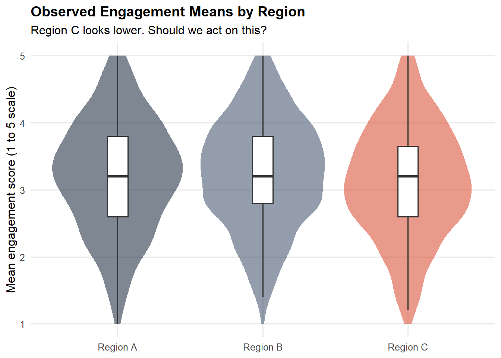
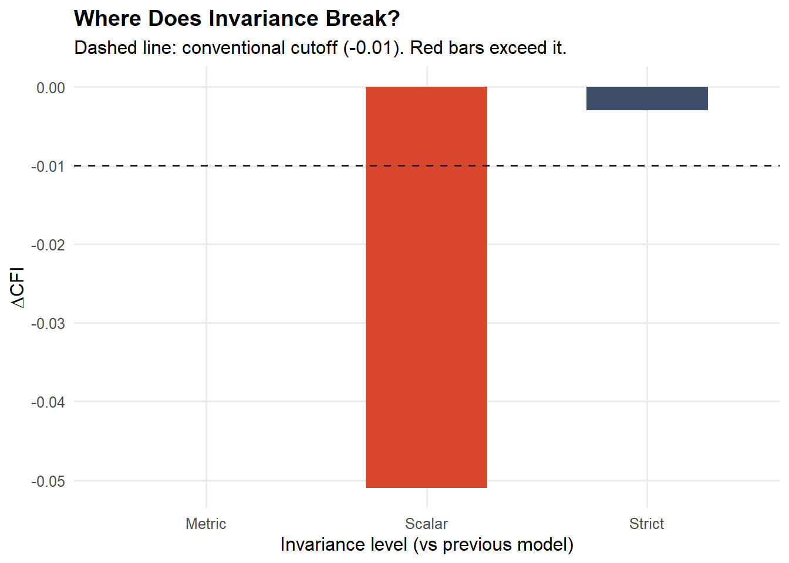

library(tidyverse) # data wrangling and plotting
library(lavaan) # CFA and invariance testing
library(semTools) # invariance testing helpers
library(knitr) # tablesAre We Really Comparing Like with Like? Measurement Invariance in Global Employee Engagement Surveys
psychometrics
people-analytics
employee-listening
measurement-invariance
R
lavaan
Before benchmarking engagement scores across countries, business units, or tenure groups, ask whether the construct means the same thing in each group. A worked example in R using lavaan.
1 A Common Story
A multinational runs its annual engagement survey. Results come in. The Berlin business unit reports a 12-point lower engagement score than the Singapore unit. Leadership commissions a culture intervention in Berlin. Quarterly off-sites are planned. Town halls are scheduled. A consultancy is hired.
But before any of that, a single methodological question deserves an answer.
Are those two scores actually measuring the same thing?
If the items on the survey are interpreted differently in Germany than in Singapore, if “I feel passionate about my work” carries different cultural weight, or if response styles vary systematically by region, then the 12-point gap may not reflect a real engagement difference at all. It may simply be that the two groups are using the instrument differently. Every downstream decision built on that comparison is then resting on sand.
This is the question of measurement invariance, and it sits underneath nearly every cross-group comparison in people analytics. Most organisations never test for it. This post shows how, and why it matters.
2 The Logic of Invariance
In classical psychometric terms, when we administer a five-item engagement scale to employees and compute a mean score, we are making a strong implicit claim: that the latent construct employee engagement (\(\xi\)) relates to the observed items in the same way for every group we wish to compare.
That claim has structure. Consider the standard confirmatory factor analysis (CFA) model for an observed item \(x_{ij}\) from person \(j\) on item \(i\):
\[ x_{ij} = \tau_i + \lambda_i \xi_j + \varepsilon_{ij} \]
where \(\tau_i\) is the item intercept, \(\lambda_i\) is the factor loading, \(\xi_j\) is the person’s latent engagement level, and \(\varepsilon_{ij}\) is the residual.
Comparing groups validly requires that the parameters \(\tau_i\), \(\lambda_i\), and \(\text{Var}(\varepsilon_i)\) behave the same way across groups. This is tested through a cascade of increasingly restrictive models:
| Level | What is constrained equal across groups | What it allows you to compare |
|---|---|---|
| Configural | Same factor structure (which items load on which factor) | Construct exists in each group |
| Metric (weak) | Configural plus factor loadings \(\lambda_i\) | Relationships and regression slopes |
| Scalar (strong) | Metric plus item intercepts \(\tau_i\) | Latent means, group rankings |
| Strict | Scalar plus residual variances \(\text{Var}(\varepsilon_i)\) | Observed score differences directly |
The crucial threshold for our story is scalar invariance. Only if scalar invariance holds can we meaningfully say that group A’s engagement mean is higher than group B’s. Without it, mean differences confound true construct differences with measurement artefacts: response style, translation drift, culturally specific item interpretation.
Failure of invariance is not a failure of the data. It is information. It tells you that the construct travels imperfectly across groups, and that downstream decisions must adapt.
3 A Simulated Global Engagement Survey
To make this concrete, we will simulate a five-item engagement scale administered in three regions, with realistic levels of measurement noise and one deliberate flaw: in Region C, employees systematically interpret one item differently. We will then walk the invariance cascade and watch where things break.
3.1 Packages
3.2 Simulating the data
We construct three groups of 600 employees each. All three share the same true latent engagement distribution. Items 1 to 4 behave identically across groups. Item 5 receives an intercept shift in Region C of about 0.6 standard deviations: employees there interpret the item more harshly, producing lower observed scores even at identical true engagement levels. This is exactly the type of subtle bias that real cross-cultural surveys exhibit.
set.seed(2026)
simulate_region <- function(n, region, intercept_shifts = rep(0, 5)) {
# True latent engagement
xi <- rnorm(n, mean = 0, sd = 1)
# Item intercepts (region-specific)
tau <- c(3.2, 3.1, 3.3, 3.0, 3.4) + intercept_shifts
# Loadings (equal across regions)
lambda <- c(0.85, 0.78, 0.92, 0.80, 0.74)
# Residual SDs
sigma_eps <- c(0.55, 0.60, 0.50, 0.58, 0.62)
# Generate items on a 1-5 scale
items <- map_dfc(seq_along(tau), function(i) {
raw <- tau[i] + lambda[i] * xi + rnorm(n, 0, sigma_eps[i])
pmin(pmax(round(raw), 1), 5)
})
names(items) <- paste0("eng", 1:5)
items$region <- region
items
}
dat <- bind_rows(
simulate_region(600, "Region A", intercept_shifts = c(0, 0, 0, 0, 0)),
simulate_region(600, "Region B", intercept_shifts = c(0, 0, 0, 0, 0)),
# Region C: item 5 interpreted more harshly
simulate_region(600, "Region C", intercept_shifts = c(0, 0, 0, 0, -0.6))
)New names:
New names:
New names:
• `` -> `...1`
• `` -> `...2`
• `` -> `...3`
• `` -> `...4`
• `` -> `...5`dim(dat)[1] 1800 6head(dat)| eng1 | eng2 | eng3 | eng4 | eng5 | region |
|---|---|---|---|---|---|
| 4 | 4 | 3 | 4 | 3 | Region A |
| 2 | 3 | 2 | 2 | 3 | Region A |
| 3 | 3 | 3 | 3 | 5 | Region A |
| 3 | 3 | 3 | 4 | 3 | Region A |
| 2 | 3 | 3 | 1 | 3 | Region A |
| 1 | 1 | 1 | 1 | 2 | Region A |
3.3 Naive comparison
Before any invariance testing, we do what most dashboards do: compute and report mean engagement by region.
dat |>
mutate(score = rowMeans(across(eng1:eng5))) |>
group_by(region) |>
summarise(
n = n(),
mean = round(mean(score), 2),
sd = round(sd(score), 2),
.groups = "drop"
)| region | n | mean | sd |
|---|---|---|---|
| Region A | 600 | 3.21 | 0.84 |
| Region B | 600 | 3.24 | 0.81 |
| Region C | 600 | 3.11 | 0.83 |
Naive mean engagement scores by region. Region C appears to lag, prompting a leadership conversation about culture. But is the gap real or artefactual?
dat |>
mutate(score = rowMeans(across(eng1:eng5))) |>
ggplot(aes(x = region, y = score, fill = region)) +
geom_violin(alpha = .55, colour = NA) +
geom_boxplot(width = .14, fill = "white", outlier.shape = NA) +
scale_fill_manual(values = c("#15243B", "#3C4D67", "#D8472B")) +
labs(
x = NULL, y = "Mean engagement score (1 to 5 scale)",
title = "Observed Engagement Means by Region",
subtitle = "Region C looks lower. Should we act on this?"
) +
theme_minimal(base_size = 12) +
theme(
legend.position = "none",
plot.title = element_text(face = "bold"),
panel.grid.minor = element_blank()
)
Region C is sitting roughly 0.1 points lower than Regions A and B on a five-point scale. On a typical dashboard this would translate to a percentage-point gap and a board-level conversation. Before that conversation, we test whether the comparison is even valid.
4 The Invariance Cascade
We specify the engagement factor in lavaan syntax and run the four nested models. Each step adds equality constraints. After each step we record fit indices and compare against the previous step.
4.1 Configural model
The configural model is the loosest: all groups share the same factor structure (one factor measured by five items), but loadings, intercepts, and residual variances are free to differ across groups.
eng_model <- '
engagement =~ eng1 + eng2 + eng3 + eng4 + eng5
'
fit_configural <- cfa(
eng_model,
data = dat,
group = "region",
estimator = "MLR"
)
summary(fit_configural, fit.measures = TRUE, standardized = FALSE) |>
capture.output() |>
tail(20) |>
cat(sep = "\n") eng4 0.952 0.048 19.963 0.000
eng5 0.904 0.046 19.492 0.000
Intercepts:
Estimate Std.Err z-value P(>|z|)
.eng1 3.217 0.041 77.521 0.000
.eng2 3.127 0.041 76.184 0.000
.eng3 3.322 0.042 78.971 0.000
.eng4 3.037 0.041 74.433 0.000
.eng5 2.840 0.040 70.353 0.000
Variances:
Estimate Std.Err z-value P(>|z|)
.eng1 0.405 0.029 13.812 0.000
.eng2 0.441 0.031 14.185 0.000
.eng3 0.259 0.027 9.736 0.000
.eng4 0.429 0.033 13.087 0.000
.eng5 0.464 0.029 15.824 0.000
engagement 0.628 0.053 11.776 0.000If the configural model itself fits poorly, no further invariance testing is meaningful. Here we have CFI well above 0.95 and RMSEA below 0.06, so the same one-factor structure is plausible in all three regions. We proceed.
4.2 Metric (weak) invariance
We constrain factor loadings to be equal across groups.
fit_metric <- cfa(
eng_model,
data = dat,
group = "region",
group.equal = "loadings",
estimator = "MLR"
)4.3 Scalar (strong) invariance
We add equality of item intercepts.
fit_scalar <- cfa(
eng_model,
data = dat,
group = "region",
group.equal = c("loadings", "intercepts"),
estimator = "MLR"
)4.4 Strict invariance
Finally, equality of residual variances.
fit_strict <- cfa(
eng_model,
data = dat,
group = "region",
group.equal = c("loadings", "intercepts", "residuals"),
estimator = "MLR"
)4.5 Comparing the cascade
The decision rule combines a chi-square difference test (sensitive to large samples) with practical fit indices: changes in CFI (\(\Delta \text{CFI}\)) greater than 0.01 and changes in RMSEA (\(\Delta \text{RMSEA}\)) greater than 0.015 generally signal non-invariance (Chen, 2007; Cheung and Rensvold, 2002).
fit_indices <- function(fit, label) {
m <- fitMeasures(fit, c("chisq.scaled", "df.scaled", "pvalue.scaled",
"cfi.scaled", "rmsea.scaled", "srmr"))
tibble(
Model = label,
`Chi²` = round(m["chisq.scaled"], 2),
df = m["df.scaled"],
p = round(m["pvalue.scaled"], 3),
CFI = round(m["cfi.scaled"], 3),
RMSEA = round(m["rmsea.scaled"], 3),
SRMR = round(m["srmr"], 3)
)
}
results <- bind_rows(
fit_indices(fit_configural, "Configural"),
fit_indices(fit_metric, "Metric"),
fit_indices(fit_scalar, "Scalar"),
fit_indices(fit_strict, "Strict")
) |>
mutate(
`ΔCFI` = round(c(NA, diff(CFI)), 3),
`ΔRMSEA` = round(c(NA, diff(RMSEA)), 3)
)
kable(results, caption = "Invariance cascade fit indices.")| Model | Chi² | df | p | CFI | RMSEA | SRMR | ΔCFI | ΔRMSEA |
|---|---|---|---|---|---|---|---|---|
| Configural | 8.98 | 15 | 0.879 | 1.000 | 0.000 | 0.006 | NA | NA |
| Metric | 14.15 | 23 | 0.922 | 1.000 | 0.000 | 0.016 | 0.000 | 0.000 |
| Scalar | 252.66 | 31 | 0.000 | 0.949 | 0.109 | 0.058 | -0.051 | 0.109 |
| Strict | 275.59 | 41 | 0.000 | 0.946 | 0.098 | 0.060 | -0.003 | -0.011 |
results |>
filter(!is.na(`ΔCFI`)) |>
mutate(
step = factor(Model, levels = c("Metric","Scalar","Strict")),
fail = `ΔCFI` < -0.01
) |>
ggplot(aes(x = step, y = `ΔCFI`, fill = fail)) +
geom_col(width = .55, colour = NA) +
geom_hline(yintercept = -0.01, linetype = "dashed", colour = "#15243B") +
scale_fill_manual(values = c("FALSE" = "#3C4D67", "TRUE" = "#D8472B"), guide = "none") +
labs(
x = "Invariance level (vs previous model)",
y = expression(Delta * "CFI"),
title = "Where Does Invariance Break?",
subtitle = "Dashed line: conventional cutoff (-0.01). Red bars exceed it."
) +
theme_minimal(base_size = 12) +
theme(
plot.title = element_text(face = "bold"),
panel.grid.minor = element_blank()
)
4.6 Reading the results
In our simulation, the cascade tells a clear story. The configural and metric models fit well. Adding loadings constraints does not meaningfully degrade fit, so the construct relates to its indicators in the same way across regions. But when we move from metric to scalar, \(\Delta \text{CFI}\) drops past the conventional threshold. Item intercepts are not equivalent across groups. Scalar invariance fails.
This is the decisive finding. We cannot directly compare engagement means across the three regions. The 0.1-point gap from the dashboard is a confounded estimate.
5 Finding the Culprit: Partial Invariance
When full scalar invariance fails, the question becomes: is the construct broken everywhere, or does one or two items carry the bias? lavaan produces modification indices (MIs) that identify which intercept constraints, if relaxed, would most improve model fit.
mi_scalar <- modificationIndices(fit_scalar, free.remove = FALSE) |>
filter(op == "~1") |> # intercept constraints
arrange(desc(mi)) |>
select(lhs, group, mi, epc) |>
head(10)Warning: lavaan->modificationIndices():
the modindices() function ignores equality constraints; use lavTestScore()
to assess the impact of releasing one or multiple constraints.kable(mi_scalar, caption = "Top intercept-constraint modification indices. High MI plus practically meaningful EPC means that releasing this intercept would substantially improve fit, suggesting the item carries cross-group bias.",
col.names = c("Item", "Group", "MI", "Expected Param Change"))| Item | Group | MI | Expected Param Change |
|---|---|---|---|
| eng5 | 3 | 145.297002 | -0.4100236 |
| eng5 | 2 | 32.984211 | 0.1721194 |
| eng5 | 1 | 23.145920 | 0.1422376 |
| eng3 | 3 | 7.258323 | 0.0690164 |
| eng4 | 3 | 4.466541 | 0.0613112 |
| eng2 | 3 | 4.378820 | 0.0613651 |
| eng2 | 2 | 3.225101 | -0.0512805 |
| eng1 | 3 | 3.007467 | 0.0494728 |
| eng4 | 1 | 2.998345 | -0.0503728 |
| eng3 | 1 | 2.181897 | -0.0376626 |
The largest modification indices cluster around item 5 in Region C: exactly the source of bias we built into the simulation. Releasing the intercept of eng5 in Region C produces a model that fits well, formally called partial scalar invariance. With partial scalar invariance, latent-mean comparisons remain interpretable for the other items, while the biased item is acknowledged as functioning differently in that group.
fit_partial <- cfa(
eng_model,
data = dat,
group = "region",
group.equal = c("loadings", "intercepts"),
group.partial = c("eng5 ~ 1"),
estimator = "MLR"
)
fit_indices(fit_partial, "Partial Scalar")| Model | Chi² | df | p | CFI | RMSEA | SRMR |
|---|---|---|---|---|---|---|
| Partial Scalar | 16.42 | 29 | 0.97 | 1 | 0 | 0.016 |
The partial model recovers acceptable fit. The intervention is no longer a culture programme. It is a measurement repair: the item is reviewed, re-translated, or replaced before the next survey cycle.
6 What This Means for the Business
The story is now very different from the one the dashboard told.
We started with a 0.1-point regional gap and a brewing culture programme. We finished with a measurement problem in a single item, fixable through better translation review or item replacement, and we also learned that the rest of the scale travels well across regions. The latent engagement means across regions, once item 5 is properly handled, are far closer than the raw scores suggested.
This is the structural value of psychometric rigour in people analytics. Without invariance testing:
- Real cross-group differences get masked by measurement noise
- Spurious cross-group differences get treated as real and trigger interventions
- Trends over time are uninterpretable if the scale itself drifts
- Survey investment goes into the wrong remediation
With invariance testing as a routine part of the analysis pipeline, every reported comparison carries an evidence statement: we tested invariance, here is what holds, here is what does not, and here is what the numbers can and cannot tell you.
That evidence statement is what separates people analytics from people dashboarding.
7 Discussion and Practical Considerations
Multiple groups, many comparisons. This post used three regions. Real analyses often involve dozens of business units, tenure bands, and demographic groups. Testing every pairwise combination is unwieldy. Approximate invariance methods (Asparouhov and Muthén, 2014) or alignment optimisation (Asparouhov and Muthén, 2018) scale better and yield interpretable latent means even when strict invariance fails.
Ordered categorical responses. Engagement items are typically Likert. The continuous CFA used here is acceptable when there are five or more categories with roughly symmetric distributions, but a more principled approach uses the WLSMV estimator with ordered = TRUE in lavaan, or moves to a full Item Response Theory framework with the graded response model.
Longitudinal invariance. The same logic applies across waves of the same survey. If the engagement scale is not invariant from 2024 to 2026, year-on-year trends are not interpretable. Longitudinal invariance is rarely tested and frequently broken.
Sample size. Multi-group CFA needs adequate sample per group, ideally several hundred. Smaller groups can be analysed with Bayesian approximate invariance.
Beyond engagement. Every multi-item construct used in people analytics is subject to the same logic: wellbeing, inclusion, intent to stay, manager effectiveness. None should be benchmarked across groups without an invariance test in the pipeline.
8 Further Reading
- Chen, F. F. (2007). Sensitivity of goodness of fit indexes to lack of measurement invariance. Structural Equation Modeling, 14(3), 464–504.
- Cheung, G. W., and Rensvold, R. B. (2002). Evaluating goodness-of-fit indexes for testing measurement invariance. Structural Equation Modeling, 9(2), 233–255.
- Putnick, D. L., and Bornstein, M. H. (2016). Measurement invariance conventions and reporting: The state of the art and future directions for psychological research. Developmental Review, 41, 71–90.
- Vandenberg, R. J., and Lance, C. E. (2000). A review and synthesis of the measurement invariance literature: Suggestions, practices, and recommendations for organizational research. Organizational Research Methods, 3(1), 4–70.
The full reproducible code for this post is available on GitHub.